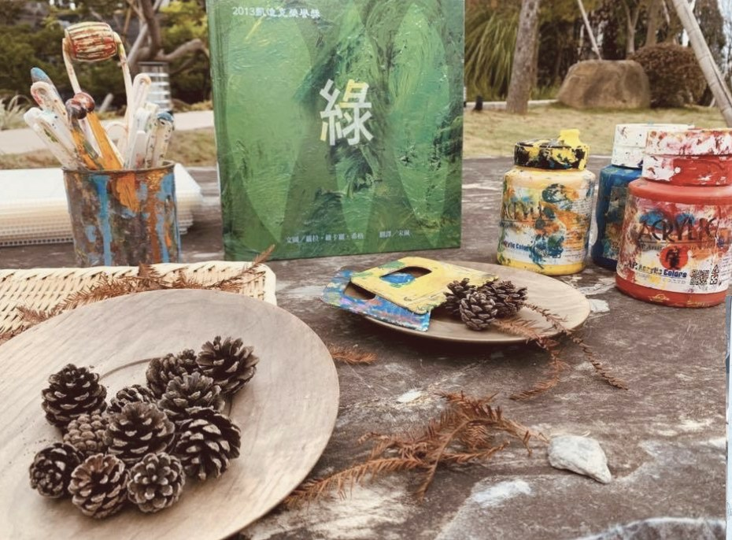
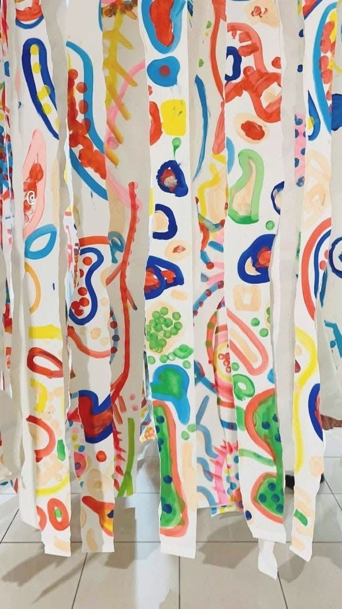
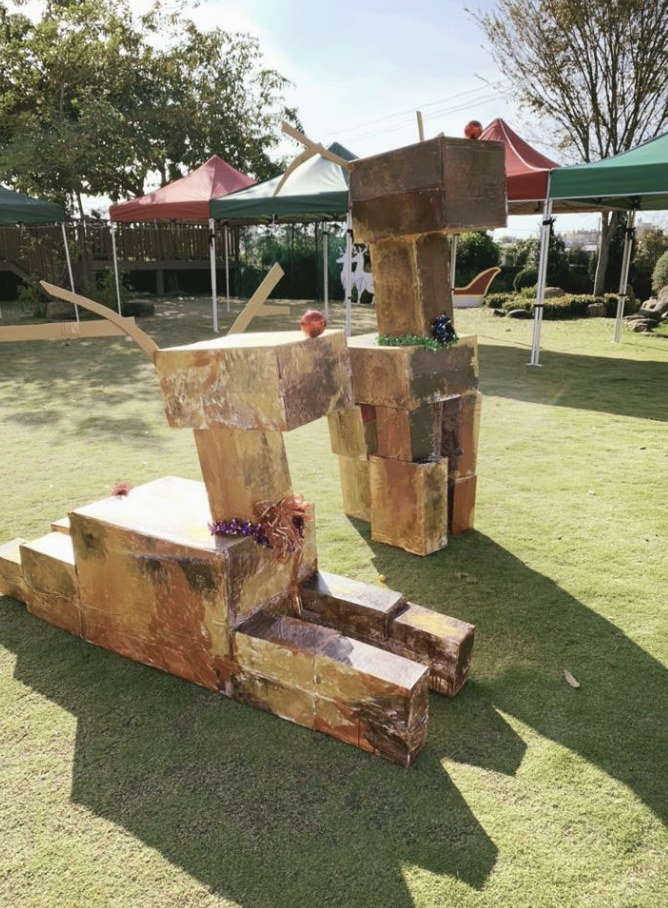
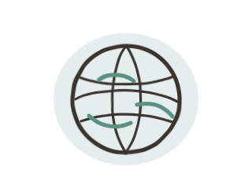
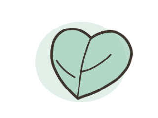
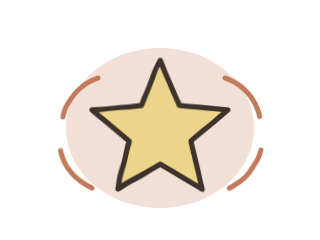
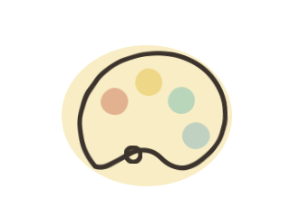
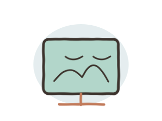
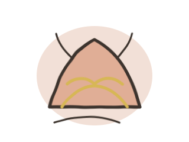
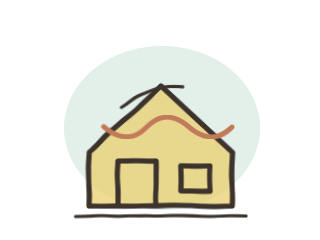

materials材料是孩子的第三位老師
八大主題是孩子探索世界的內容脈絡，48 種歐洲藝術方法論是老師帶領創作的教學路徑；兩者會在每堂課中混合使用，讓孩子在自由中找到自己，在創作中建立自信。
我們的課程規劃以「八大主題」與「獨家研發 48 種歐洲藝術方法論」交織而成。八大主題提供孩子探索世界的內容與情境，48 種方法論則提供老師帶領孩子感受、思考與表達的創作路徑。
也就是說，每一堂課都不是單純上一個主題，也不是只練一種技法，而是把「主題脈絡」與「方法引導」混合設計，讓孩子在生活中發現藝術，在藝術中學會生活。
孩子不只是來完成作品，而是一步步在創作中建立自信，拓展理解力，慢慢成為一個能表達、能感受、也能同理他人的人。
八大主題與 48 種方法論，不只是課表上的名稱，而是會變成顏料、自然材料、布條、空間裝置與孩子身體經驗的真實學習。



八大主題不是獨立課程分類，而是每堂課的「內容地圖」。老師會在這些主題中，搭配 48 種歐洲藝術方法論，引導孩子用不同方式感受、思考與創作。

從文化、建築、服飾到藝術風格，帶孩子用創作理解不同國家的美感與精神。
讓孩子在故事裡找到自己的畫面與情緒，把閱讀轉化成圖像表達。

從植物、動物、地景與氣候出發，建立感官觀察與環境關懷。

從奧運、動畫、科技與當代文化中，培養孩子自己的文化視角。

不是從色票開始，而是從生活裡看見色彩、感受色彩、理解色彩。

走進藝術家的創作現場，把大師的語言轉化為孩子自己的創作能量。

打破框架與標準答案，讓孩子用身體、材料與想像回到創作本能。

從台灣土地、節慶、工藝與日常出發，建立孩子的文化認同。
每個年齡階段，都有不同的感官經驗、表達方式與思考能力。課程讓孩子循序漸進地從自由探索，走向情緒表達、創意思考與個人技法發展。
透過繪本、音樂與身體律動，引導孩子自然地接觸色彩與創作。
從觸摸、觀察、聆聽與遊戲中，建立對創作的好奇心與安全感。
從自由探索走向有意識的創作，建立表達能力、想像力與解決問題的勇氣。
引導孩子深入觀察、獨立思考，並發展屬於自己的創作觀點。
結合創意思維與專業藝術技法，建立 AI 世代無法被取代的原創觀點。
每個單元都會從八大主題中選擇內容，再搭配適合的歐洲教育觀點與藝術方法，讓孩子的學習有深厚的理論根基，也有豐富的實踐體驗。
簡單來說：八大主題回答「這堂課探索什麼」，48 種方法論回答「老師如何帶孩子創作」。兩者一起，才是大綠地完整的課程設計。
加入 LINE 諮詢，我們幫你選擇最合適的課程與時段